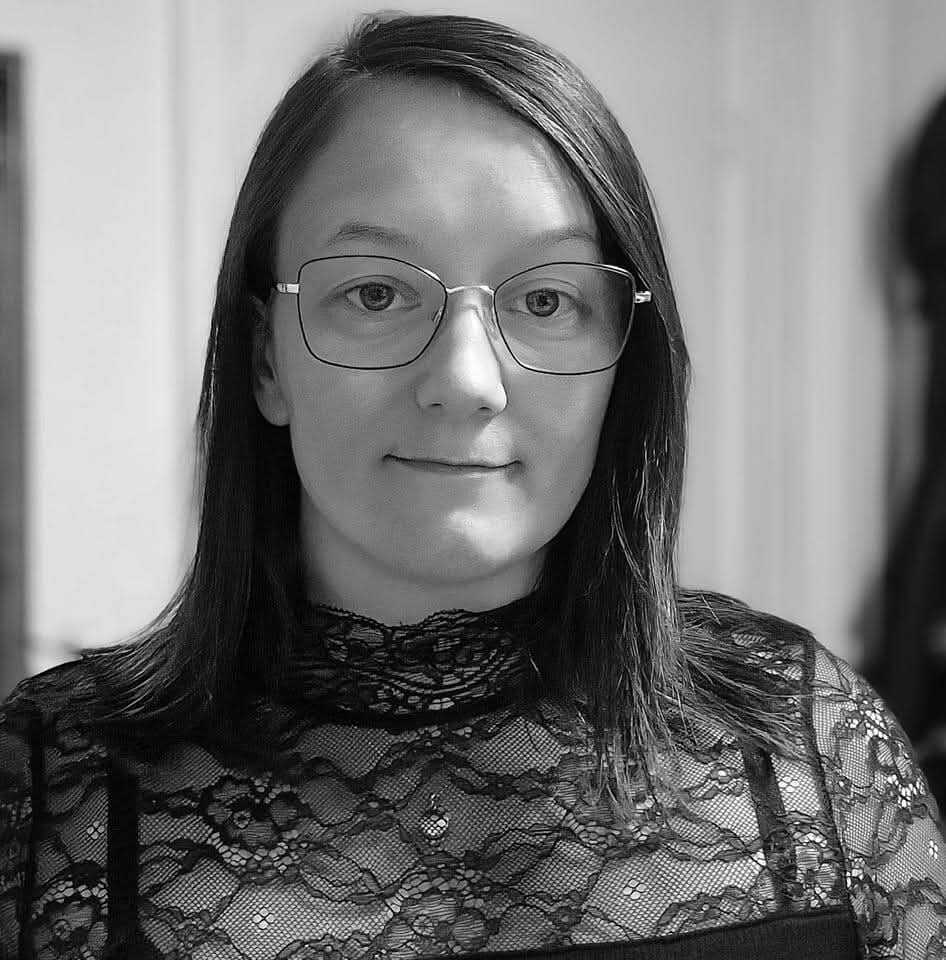

Om mig
Jeg hedder Monica, og jeg er multimediedesignstuderende med passion for, grafik, animation, og digital formidling. Jeg elsker at kombinere kreativitet med tekniske løsninger og arbejder målrettet for at skabe design, der ikke bare ser godt ud, men også fungerer godt for brugeren. Gennem min uddannelse har jeg arbejdet med projekter inden for webudvikling, grafisk design, fotos, animation, brugerundersøgelser, og jeg har fået erfaring med værktøjer som HTML, CSS, Figma, After Effects, Illustrator og Canva. Jeg er nysgerrig, lærevillig og brænder for at udvikle mig fagligt – både i samarbejde med andre og på egen hånd. Hvis du vil vide mere om mig eller mine projekter, er du altid velkommen til at kontakte mig. Programmer jeg arbejder med